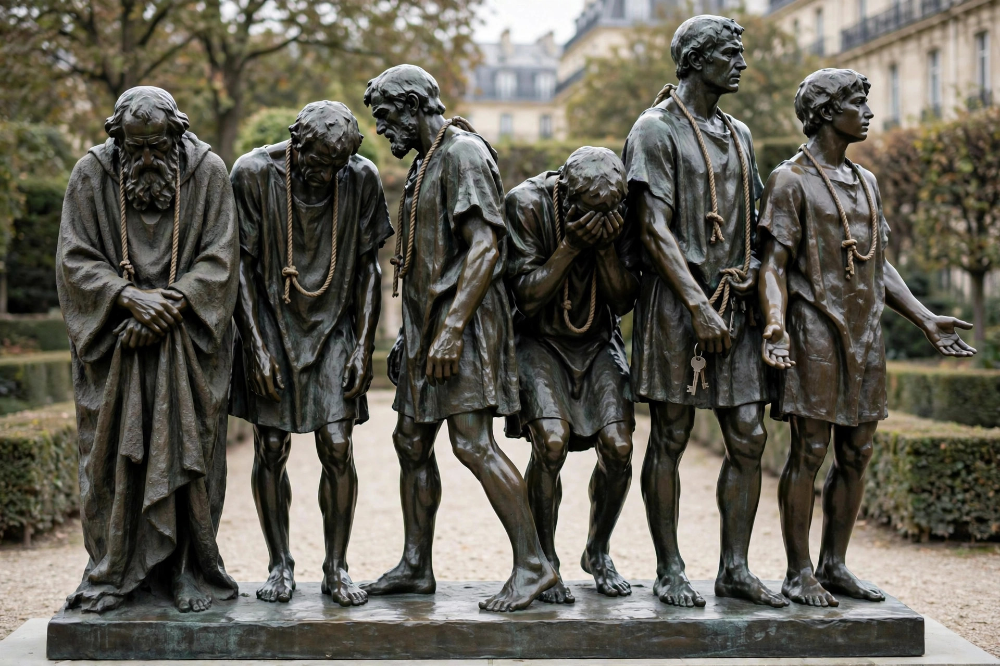

| The Burghers of Calais | |
|---|---|
| Artist | Auguste Rodin |
| Year | 1884–1889 |
| Type | Bronze sculpture |
| Location | Calais (original cast) and other cities |
The Burghers of Calais (Les Bourgeois de Calais) is a sculpture by Auguste Rodin, completed in 1889. It commemorates an episode of the Hundred Years' War: in 1347, after an eleven-month siege of Calais, six leading citizens (burghers) offered themselves to King Edward III of England to be executed in exchange for sparing the city, as recounted by the chronicler Jean Froissart. They were in the end spared, traditionally through the intercession of Queen Philippa.

The city of Calais commissioned the monument in 1884, expecting a single heroic figure of the burghers' leader, Eustache de Saint Pierre. Rodin instead depicted all six men as a group, at ground level rather than on a high pedestal, each expressing a different emotion — despair, resolve, resignation — with enlarged hands and feet and wearing sackcloth with halters around their necks. The unconventional design was controversial; the monument was inaugurated in Calais in 1895, and only after Rodin's death was it placed at ground level as he intended.
Under French law, up to twelve casts could be made from Rodin's original moulds. Casts stand in Calais, in the Victoria Tower Gardens in London, at the Metropolitan Museum of Art in New York, at the Rodin Museum in Philadelphia, and in several other cities, as well as at the Musée Rodin in Paris.